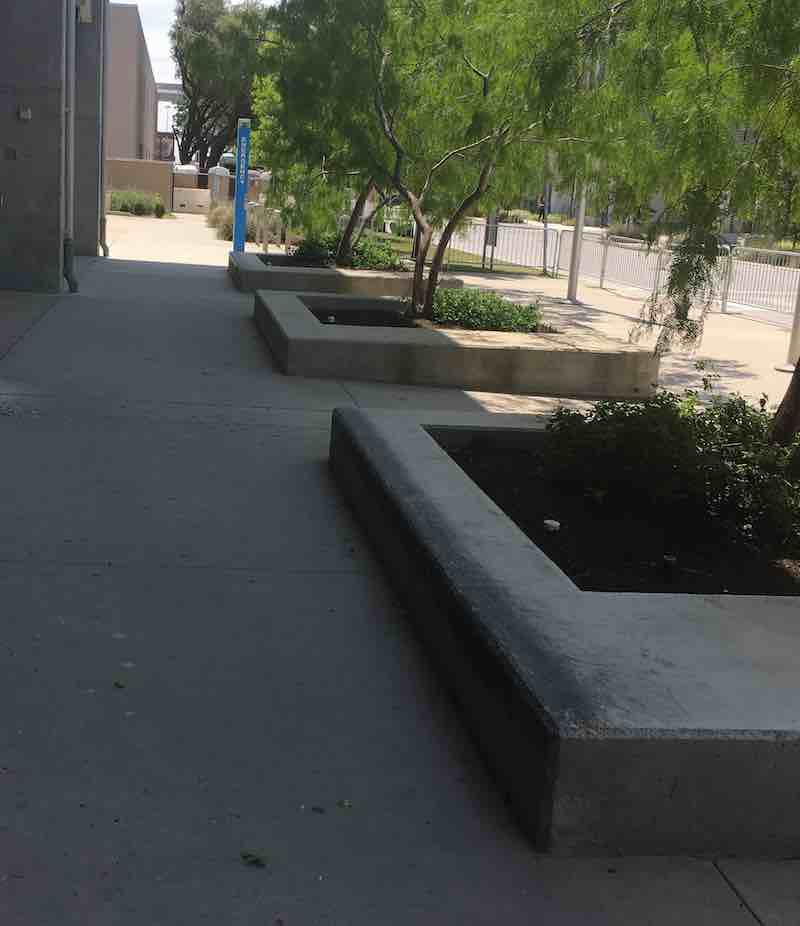
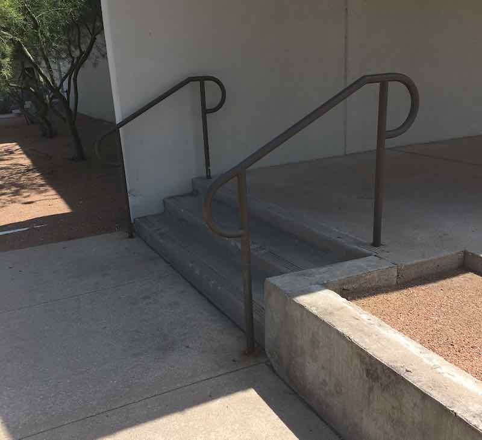
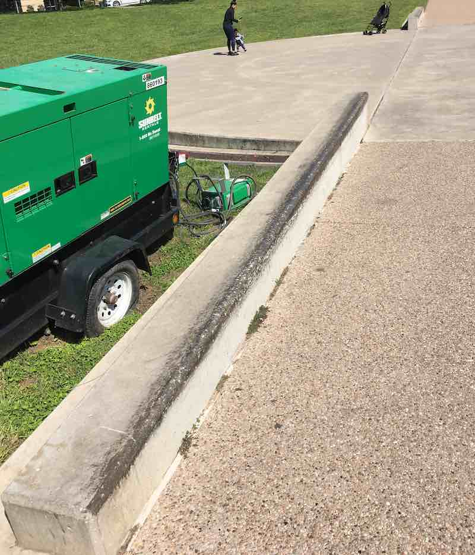
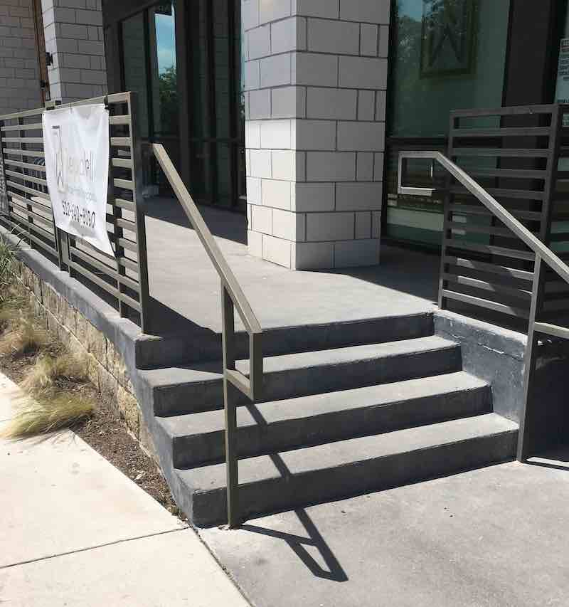

Hey, thanks for viewing the in depth version on the skate spots listed on the map. I will be going in on the ones I've been to with pictures and a slight descriptions.
-Grass gap by Nordstrom garage
3111 Palm Way, Austin, TX 78758
I've been here about 4 times, and been kicked out 1.5 times. I think the bust factor just depends on the day. There is valet parking right in front of the spot so if they're busy you may get the boot. The spot looks amazing! Nice greenery and a great clip fo a camcorder if your out filming. Drop is as big as a 3/4 stair. make sure you have a spotter or know if a car is coimg has a major blind spot in the run up.
-Big hip OG atx spot
6164 Sheridan Ave, Austin, TX 78723
I remember when I was eight years old I got caught on camera and the police came to kick me out for trespassing, they told me I need to call my dad and he came to picked me up. Even though I was just a kid, the police were out there bruh. Since then they have been bought out by new business, I don't know if they are as strict but It still has cameras. People actually work in this area throughout the day so cars may be parked. if you go after hours you may be fine without any hassle.
-Community college ledges
Highland Campus Dr, Austin, TX 78752
I’ve skated here a couple of times and each time I get kicked out within maybe 10-15 minutes, Sometimes even quicker. Try to go on the weekends, security will still be around probably, so get your clip and go.
-Gym 3 stair/ 1 stair
863 Clayton Ln Austin, TX 78752
This gym has some nice flat ground on the side of the building. there is also a three stair over there too. The entrance has a one stair with some really crusty meta, I don't think it grind.
-2 long ledges
1905 Aldrich St Austin, TX 78723
Two long edges on the edge of some water, be careful about the ducks and launching your board into the Lake. There's always a ton of people out here running so that's one drawback. Another drawback is the run up is on some cobblestone like pavement…this may be more of a l BMX spot than a skate spot, I tried it and it was hella crusty, needs it wax. Skate around this area though. Its urban and nice where the shops are. I’m sure there were some NY sidewalk rails up there.
-Buttery HEB 4 stair
4818 Berkman Dr STE 100, Austin, TX 78723
This four stair has the best roll up I've ever seen in my life. I'm not much of a street skater because I'm scared of cracks and pebbles but I would jump down this with no hesitation because it's too perfect! I've skated this maybe once, didn't have any trouble but this was before the business boomed in this area. You may or may not get kicked out you, it seems like a nice friendly Austin-vibe area so who knows.
-Buck Hillbomb
1107 W 12th St, Austin, TX 78703
I've seen so many fat Hill bombs down this! Some were sketch, some absolutly flawless but this thing is definitely BUCK af. There's a nice five stairs up the Hill . I've seen people kickflip stair and ride all the way down. If you're trying to get an nice clip, this can definitely be an ender or starter your choice, just watch out for cars but most people drive pretty safe on this road so you chillin’ honestly.
-Ditch, Ledges, and 3 stair
4818 Berkman Dr STE 100, Austin, TX 78723
This little area is pretty jam packed. The tennis courts have two ledges if you can even get in there. The tennis court probably has HIGH bus factor, right outside is more fun anyway! The outside has a long ditch it goes from steep so mellow you can either launch out in the mellow area or gap into it from the top and ride it all the way down there's also a 3 stair at the, pretty fun little area.
Created by: Aziza O'Bryant on March 6, 2020